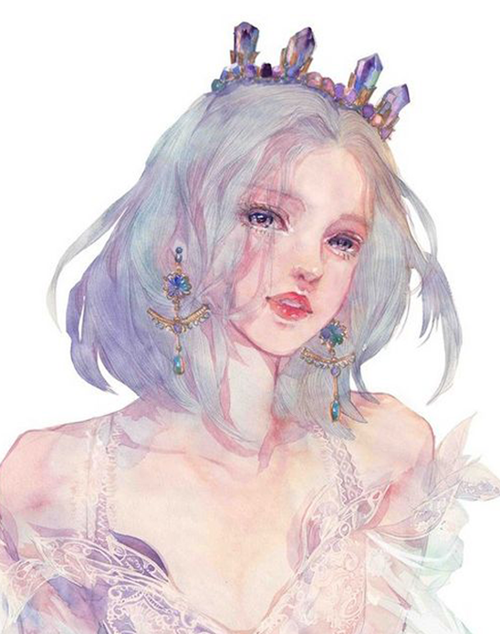

谭青水彩
关于我
ABOUT ME

01
画家简介
Artist introduction
这里是画家简介概要内容这里是画家简介概要内容，这里是画家简介概要内容这里是画家简介概要内容，
这里是画家简介概要内容这里是画家简介概要内容这里是画家简介概要内容这里是画家简介概要内容，
这里是画家简介概要内容这里是画家简介概要内容。
Here is a brief introduction of the painterHere is a brief introduction of the painter, Here is a brief introduction of the painterHere is a brief introduction of the painter. Here is a brief introduction of the painterHere is a brief introduction of the painter.
MORE >>
Here is a brief introduction of the painterHere is a brief introduction of the painter, Here is a brief introduction of the painterHere is a brief introduction of the painter. Here is a brief introduction of the painterHere is a brief introduction of the painter.
代表作品
REPRESENTATIVE WORKS
画廊信息
GALLERY INFORMATION
画廊名称
Corporate culture and philosophy
水彩画是用水调和透明颜料作画的一种绘画方法，简称水彩，由于色彩透明，一层颜色覆盖另一层可以产生特殊的效果，
但调和颜色过多或覆盖过多会使色彩肮脏，水干燥的快，所以水彩画不适宜制作大幅作品，适合制作风景等清新明快的小幅画作。
水彩颜料携带方便，也可作为速写搜集素材用。与其他绘画比较起来，水彩画相当注重表现技法。其画法通常分“干画法”和“湿画法”两种。
Here is a brief introduction of the painterHere is a brief introduction of the painter, Here is a brief introduction of the painterHere is a brief introduction of the painter. Here is a brief introduction of the painterHere is a brief introduction of the painter.
Here is a brief introduction of the painterHere is a brief introduction of the painter, Here is a brief introduction of the painterHere is a brief introduction of the painter. Here is a brief introduction of the painterHere is a brief introduction of the painter.